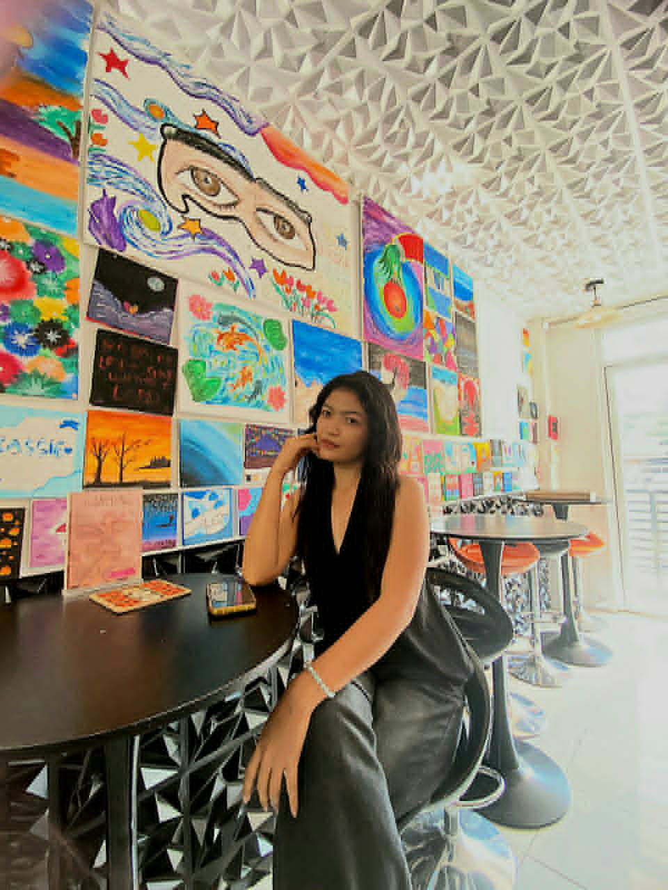

Angelica Ramos Estacio
💻 Bachelor of Computer Science Student
✨ Dreamer • Creator • Business Owner • Future IT Professional ✨
💜 Welcome to My Portfolio 💜
As you explore this portfolio, you will discover my academic journey, technical knowledge, project experiences, and entrepreneurial endeavors. Each section reflects my dedication to learning, creativity, and personal development. This portfolio serves as a representation of who I am today and the professional I aspire to become in the future. 💜✨
🌸 I love coding, fuzzy wire crafts, bouquet making,
and learning new technologies.
👩 About Me
I am Angelica Ramos Estacio,
a Bachelor of Computer Science student from
Don Mariano Marcos Memorial State University,
South La Union Campus.
I was born on September 9, 2005.
My family calls me Angel,
while my friends call me Angge.
I am passionate about coding, technology,
entrepreneurship, and self-development.
🎓 Education
- San Jose Elementary School (2010-2017)
- DEFEMNHS (2017-2023)
- DMMMSU South La Union Campus (2023-Present)
✨ Skills
- Communication Skills
- Time Management
- Leadership Skills
- Adaptability
- Teamwork & Collaboration
- Relationship Building
- Microsoft Excel
- Inventory Management
- Data Encoding
- Basic Programming
- Database Management
📂 Projects & Experiences
Throughout my academic journey, I have gained valuable hands-on experiences and projects that strengthened my technical and problem-solving skills:
- Grade 9: Learned computer editing and identified the parts of a computer. Experienced dismantling a system unit and determining its components.
- Grade 11: Studied computer system servicing, including peer-to-peer and client-server networking. Gained skills in troubleshooting Wi-Fi, manually connecting computers to networks, and installing operating systems through BIOS.
- Grade 12: Focused on advanced computer servicing, troubleshooting, and system management.
- 1st Year College: Learned the fundamentals of programming using the C language.
- 2nd Year College: Focused on Java and HTML, mastering basic structures. Developed a Point of Sale (POS) system for Jollibee as a project.
- 3rd Year College: Worked on multiple projects including:
- POS system for a business cart.
- Library System design and performance evaluation.
- System development for PACS (Performance Arts & Creative Society).
Explored various programming languages such as Luna, Ruby, and Go, focusing on their differences and applications.
🌸 Angel's Crafty

Angel's Crafty is my small business where I create
handmade bouquets and fuzzy wire crafts.
✨ What I Offer
- 🌷 Mini Bouquets
- 💐 Bouquets
- 🔑 Keychains
- 🧸 Resell Plushies
🌸 Products Gallery

🧸 Plushie Keychains
Soft, adorable, and perfect gifts!

🌻 Sunflower Bouquet
Handmade fuzzy wire sunflower bouquet.

🌸 Lily Keychain
Cute fuzzy wire lily keychain.

💜 Makeup Bouquet
Perfect for gifts and special occasions.

🌻 Mini Sunflower Bouquet
Bright and cheerful handmade bouquet.
📍 Available At